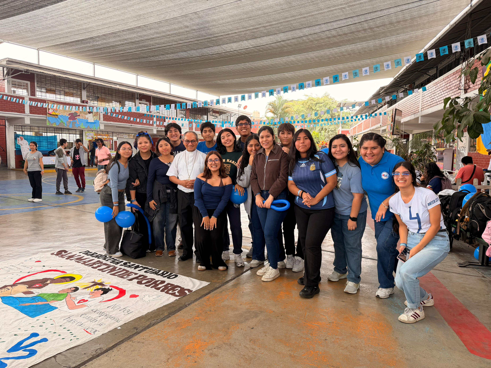
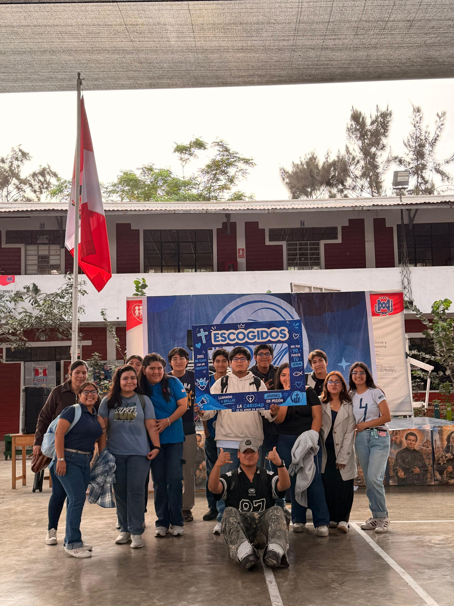
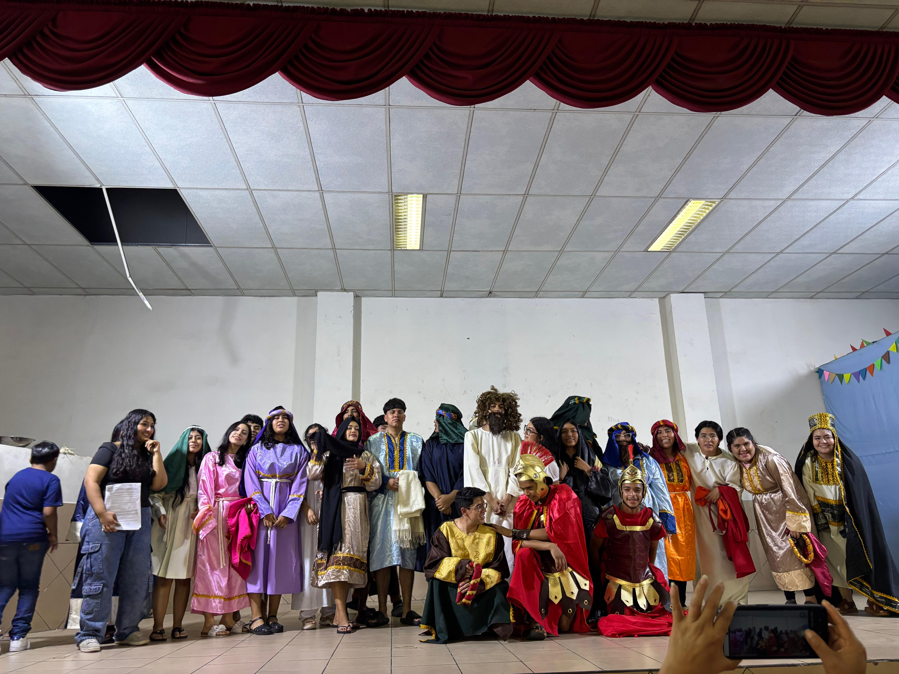

Formación bíblica
Encuentros centrados en la Palabra de Dios, la vida de Jesús y el sentido del Sacramento de la Confirmación.
Te esperamos en la Catequesis de Confirmación Juvenil de la Parroquia Santuario San Martín de Porres. Todos los domingos, en un ambiente juvenil, dinámico y lleno de esperanza.

Acompañamos a los jóvenes en un proceso de formación cristiana que une oración, amistad, aprendizaje y participación activa en la parroquia.
Encuentros centrados en la Palabra de Dios, la vida de Jesús y el sentido del Sacramento de la Confirmación.
Dinámicas, convivencias y actividades que hacen de la catequesis un espacio cercano, alegre y participativo.
Buscamos formar jóvenes comprometidos con la Iglesia, el servicio y la comunidad.
Una ruta de crecimiento integral para que cada joven viva su fe con mayor profundidad y compromiso.
Una galería con estilo de afiche, para mostrar tus eventos juveniles y la parroquia con una presencia visual más fuerte.





Información clara para jóvenes y padres de familia interesados en unirse a la catequesis.
Encuéntranos en la parroquia, revisa nuestras redes y ubícate fácilmente en el mapa.